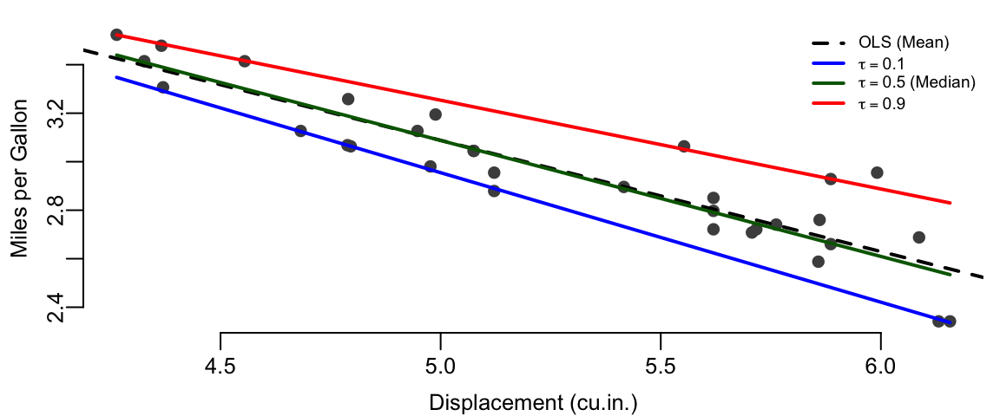
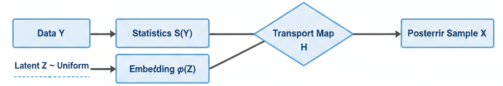

“It is better to be roughly right than precisely wrong.” – John Maynard Keynes
In Chapter 3, we explored how to learn posterior distributions \(p(\theta\mid y)\) using Bayesian learning and to use it for predictions, hypothesis testing, and other tasks. In Chapter 4, we explored how rational agents make decisions under uncertainty by maximizing expected utility. Traditional Bayesian approaches to such problems require computing posterior distributions \(p(\theta\mid y)\), which in turn requires specifying likelihood functions \(p(y\mid \theta)\) and often involves challenging density estimation. But what if we could bypass density estimation entirely and directly learn the quantities we need for decision-making and other tasks?
This chapter introduces quantile neural networks, a powerful approach that learns posterior distributions through their quantile functions rather than their densities. This shift from densities to quantiles has profound implications: it enables likelihood-free inference, provides natural connections to decision theory through the quantile-expectation identity, and scales to high-dimensional problems where density estimation becomes intractable.
The key insight is straightforward. Any expectation—including the expected utility central to decision theory—can be represented as an integral over quantiles: \[
E[f(\theta)] = \int_0^1 F^{-1}_{f(\theta) | y}(\tau) d\tau
\] Rather than learning densities and then computing expectations via sampling, we can directly learn the quantile function \(F^{-1}_{f(\theta) | y}(\tau)\) using neural networks. This approach is not only more efficient but also naturally handles simulation-based models where likelihoods are unavailable or computationally expensive.
Throughout this chapter, we develop quantile neural networks from theoretical foundations through practical applications. We begin by establishing the fundamentals of quantile regression (Section 21.1), deriving the check loss function and demonstrating its properties. We then show how to extend this framework to the generative approach (Section 21.2), using the noise outsourcing theorem to represent posterior distributions through quantile functions rather than densities. Before moving to neural networks, we examine trend filtering (Section 21.3) as an elegant middle ground that provides nonlinear function approximation while maintaining computational tractability. With these foundations in place, we establish Bayes rule for quantiles (Section 21.4), showing how Bayesian updating can be performed entirely in terms of quantile functions. We then turn to three major applications demonstrating the versatility of this framework: maximum expected utility problems (Section 21.5), where utility functions are incorporated directly into training; portfolio optimization under parameter uncertainty (Section 21.7), extending beyond cases with closed-form solutions; and supply chain forecasting (Section 21.8), where companies like Amazon use quantile methods to predict entire demand distributions for inventory optimization. After detailing the neural network implementation (Section 21.6), including cosine embeddings and Wasserstein distance connections, we connect to modern artificial intelligence through distributional reinforcement learning (Section 21.9), showing how agents learn entire distributions of returns for more robust decision-making.
We begin by developing the theoretical foundations of quantile regression, deriving the loss functions from first principles, and then show how neural networks provide a flexible architecture for learning complex quantile functions in high dimensions.
21.1 Quantile Regression
Before diving into neural network implementations, we present the foundational concepts of quantile regression. This section derives the quantile loss function from first principles and discusses applications across multiple fields, setting the stage.
Standard calculus shows that for observed values \(y_1, \ldots, y_n\), the median is the value that minimizes the expected absolute deviation: \[
m = \arg\min_q \frac{1}{n} \sum_{i=1}^n |y_i - q| = \arg\min_q E[|Y - q|]
\] Intuitively, the sum of absolute deviations is minimized when the median is the value that is closest to half of the observations.
The median is the special case \(\tau = 0.5\), but the same principle generalizes to any quantile \(\tau \in (0,1)\). We use a generalization of the absolute value function—the check loss or pinball loss—to find the minimizer: \[
q_\tau = \arg\min_q \frac{1}{n} \sum_{i=1}^n \rho_\tau(y_i - q).
\] Here \(\rho_\tau(u)\) is the check loss or pinball loss and is defined as: \[
\rho_\tau(u) = u(\tau - I(u < 0)) = \begin{cases}
\tau u & \text{if } u \geq 0 \\
(\tau - 1) u & \text{if } u < 0
\end{cases}
\] This can also be written in the more computationally convenient form: \[
\rho_\tau(u) = \max(u\tau, u(\tau-1))
\]
Example 21.1 (Linear Quantile Regression) To illustrate quantile regression in practice, we’ll analyze the relationship between engine displacement and fuel efficiency using the classic mtcars dataset. Rather than only estimating the mean relationship (as ordinary least squares would), we’ll also estimate conditional quantiles to understand how this relationship varies across the distribution of fuel efficiency. This allows us to capture the heteroskedasticity in the data. Figure 21.1 shows the quantile regression results.
Quantile regression on mtcars dataset
# Load mtcars datasetdata(mtcars)# Define the check loss (pinball loss) functioncheck_loss <-function(u, tau) {# rho_tau(u) = u * (tau - I(u < 0)) u * (tau - (u <0))}# Objective function: sum of check losses for quantile regressionquantile_objective <-function(beta, X, y, tau) {# Predicted values y_pred <- X %*% beta# Residuals residuals <- y - y_pred# Sum of check lossessum(check_loss(residuals, tau))}# Prepare dataX <-cbind(1, log(mtcars$disp)) # Design matrix with intercepty <-log(mtcars$mpg)# Fit quantile regression models using optim()quantiles <-c(0.1, 0.5, 0.9)results <-list()for (tau in quantiles) {# Initial values (use OLS estimates as starting point) ols_fit <-lm(log(mpg) ~log(disp), data = mtcars) beta_init <-coef(ols_fit)# Optimize using BFGS (quasi-Newton method)# We use BFGS because the check loss is non-differentiable at zero,# but BFGS can handle this with numerical approximations optim_result <-optim(par = beta_init,fn = quantile_objective,X = X,y = y,tau = tau,method ="BFGS" ) results[[as.character(tau)]] <-list(coefficients = optim_result$par,value = optim_result$value,convergence = optim_result$convergence )}# Also fit OLS for comparisonols_model <-lm(log(mpg) ~log(disp), data = mtcars)# Create visualizationplot(log(mtcars$disp), log(mtcars$mpg),pch =16, col ="gray30",xlab ="Displacement (cu.in.)",ylab ="Miles per Gallon",cex.lab =0.8,cex.axis =0.8,cex.main =0.8)# Add regression linesdisp_range <-seq(min(log(mtcars$disp)), max(log(mtcars$disp)), length.out =100)# OLS lineabline(ols_model, col ="black", lwd =2, lty =2)# Quantile regression linescolors <-c("blue", "darkgreen", "red")for (i inseq_along(quantiles)) { tau <- quantiles[i] beta <- results[[as.character(tau)]]$coefficients# Predicted values: y = beta_0 + beta_1 * x pred <- beta[1] + beta[2] * disp_rangelines(disp_range, pred, col = colors[i], lwd =2)}# Add legendlegend("topright",legend =c("OLS (Mean)",expression(tau ==0.1),expression(tau ==0.5~"(Median)"),expression(tau ==0.9) ),col =c("black", colors),lty =c(2, 1, 1, 1),lwd =2,bg ="white",bty ="n",cex =0.6)

Figure 21.1: Quantile regression on mtcars dataset. The relationship between engine displacement and fuel efficiency varies across quantiles, revealing heteroskedasticity in the data.
Table Table 21.1 shows the estimated coefficients.
Quantile Regression Results: Fuel Efficiency vs. Engine Displacement
Model
Intercept
Slope
(Intercept)
Quantile tau = 0.1
5.6
-0.53
(Intercept)1
Quantile tau = 0.5
5.5
-0.48
(Intercept)2
Quantile tau = 0.9
5.1
-0.37
(Intercept)3
OLS (Mean)
5.4
-0.46
The quantile regression results reveal several important patterns in the relationship between engine displacement and fuel efficiency. First, the slopes differ substantially across quantiles, indicating heteroskedasticity in the conditional distribution. The 10th percentile slope is -0.5340, while the 90th percentile slope is -0.3660. This difference suggests that the negative relationship between displacement and fuel efficiency is stronger for more fuel-efficient cars.
Second, the widening gap between the 10th and 90th percentiles as displacement increases reveals increasing uncertainty in fuel efficiency for larger engines. This pattern likely reflects varying driving conditions, maintenance practices, and vehicle technology across different cars with similar engine sizes.
Third, the median regression (\(\tau\) = 0.5) demonstrates robustness to outliers. Unlike OLS, which minimizes squared errors and thus heavily weights extreme values, quantile regression uses the asymmetric absolute loss that treats positive and negative residuals differently based on the quantile level. This asymmetry makes the estimator less sensitive to unusual observations.
Finally, the check loss \(\rho_\tau(u)\) is piecewise linear, making it non-differentiable at zero. This property explains why we use BFGS rather than gradient-based methods that assume smoothness. The BFGS algorithm builds a quasi-Newton approximation that handles the kink effectively, converging reliably despite the non-smooth objective function.
Traditional quantile regression assumes \(f_\tau(x, \theta)\) is linear in parameters. This limitation becomes severe in several important scenarios. First, many real-world relationships are inherently nonlinear—demand forecasting, for instance, involves complex interactions between time, seasonality, promotions, and product features that cannot be captured by linear models. Second, when working with high-dimensional inputs such as image or text data, we need feature learning capabilities that neural networks provide naturally. Third, when estimating multiple quantiles simultaneously, neural networks can learn shared representations across quantiles, substantially improving computational efficiency. Finally, as we demonstrate in Section 21.5, neural architectures enable us to incorporate utility functions directly into the learning process, seamlessly integrating prediction with decision-making.
Neural quantile regression addresses these limitations by combining the robustness and interpretability of quantile methods with the flexibility and scalability of deep learning. This synthesis proves particularly valuable in applications where both distributional uncertainty and complex feature interactions matter. We now formalize this scalable approach using the generative framework.
21.2 From Densities to Quantiles: A Generative Approach
Let \((X,Y) \sim P_{X,Y}\) be input-output pairs and \(P_{X,Y}\) a joint measure from which we can simulate a training dataset \((x_i, y_i)_{i=1}^N \sim P_{X,Y}\). Standard prediction techniques focus on the conditional posterior mean \(\hat{X}(Y) = E(X|Y) = f(Y)\) of the input given the output. The standard approach formulates this as nonparametric regression \(X = f(Y) + \epsilon\) and estimates the conditional mean using methods such as kernel smoothing or K-nearest neighbors. Recently, deep learning approaches have been proposed, with theoretical properties established by N. G. Polson and Sokolov (2023).
Generative methods take this approach one step further. Let \(Z \sim P_Z\) be a base measure for a latent variable, \(Z\), typically a standard multivariate normal or vector of uniforms. The goal of generative methods is to characterize the posterior measure \(P_{X|Y}\) from the training data \((x_i, y_i)_{i=1}^N \sim P_{X,Y}\) where \(N\) is chosen to be suitably large. A deep learner is used to estimate \(\hat{f}\) via the non-parametric regression \(X = f(Y, Z)\). In the case where \(Z\) is uniform, this amounts to inverse CDF sampling, namely \(X = F_{X|Y}^{-1}(Z)\)—the quantile function that we develop formally in Section 21.1.
In general, we characterize the posterior map for any output \(Y\). We characterize the posterior by evaluating the network at any \(Y\) using the transport map \[
X = H(S(Y), \psi(Z))
\] Here \(\psi\) denotes the embedding function. The deep learners \(H\) and \(S\) are estimated from the triples \((X_i, Y_i, \psi(Z_i))_{i=1}^N \sim P_{X,Y} \times P_Z\). The ensuing estimator \(\hat{H}\) can be thought of as a transport map from the base distribution to the posterior as required.
The following diagram illustrates the transport map architecture:

Transport map architecture for generative inference. Data \(Y\) is summarized by statistics \(S(Y)\), while latent variable \(Z\) is embedded via \(\psi\). The transport function \(H\) maps these inputs to posterior samples.
Specifically, the idea of generative methods is straightforward. Let \(y\) denote data and \(\theta\) a vector of parameters including any hidden states (a.k.a. latent variables) \(z\). First, we generate a “look-up” table of “fake” data \(\{y^{(i)}, \theta^{(i)}\}_{i=1}^N\). By simulating a training dataset of outputs and parameters, we can use deep learning to solve for the inverse map via a supervised learning problem. Generative methods have the advantage of being likelihood-free. For example, our model might be specified by a forward map \(y^{(i)} = f(\theta^{(i)})\) rather than a traditional random draw from a likelihood function \(y^{(i)} \sim p(y^{(i)}|\theta^{(i)})\). The base distribution \(P_Z\) is typically uniform (for univariate problems) or a very high-dimensional Gaussian vector (for multivariate problems).
The theoretical foundation for this approach is the noise outsourcing theorem, which guarantees that we can represent any posterior distribution through a deterministic function of the data and a base random variable.
Noise Outsourcing Theorem(Kallenberg 1997): If \((Y, \Theta)\) are random variables in a standard probability space \((\mathcal{Y}, \Theta)\), then there exists a random variable \(\tau \sim U(0,1)\) which is independent of \(Y\) and a function \(H: [0,1] \times \mathcal{Y} \rightarrow \Theta\) such that \[
(Y, \Theta) \stackrel{a.s.}{=} (Y, H(Y, \tau))
\] Moreover, if there is a sufficient statistic \(S(Y)\) with \(Y\) independent of \(\Theta | S(Y)\), then \[
\Theta\mid Y \stackrel{a.s.}{=} H(S(Y), \tau).
\]
This result tells us that posterior uncertainty can be characterized via an inverse non-parametric regression problem where we predict \(\theta^{(i)}\) from \(y^{(i)}\) and \(\tau^{(i)}\), where \(\tau^{(i)}\) is drawn from a base distribution \(p(\tau)\). The base distribution is typically uniform (for univariate problems) or a very high-dimensional Gaussian vector (for multivariate problems). We train a deep neural network \(H\) on \[
\theta^{(i)} = H(S(y^{(i)}), \tau^{(i)}).
\] Here \(S(y)\) is a statistic used to perform dimension reduction with respect to the signal distribution—analogous to sufficient statistics in traditional Bayesian inference. A result due to Brillinger (2012) shows that for single-index models, we can estimate the subspace spanned by \(S\) via ordinary least squares, effectively learning the sufficient summary statistics from data.
Specifying the architecture of \(H\) is key to the efficiency of the approach. N. Polson, Ruggeri, and Sokolov (2024) propose using quantile neural networks implemented with ReLU activation functions, which we detail in Section 21.6.
21.3 Nonlinear Quantile Regression via Trend Filtering
Before exploring the full power of neural networks for quantile regression, we examine an elegant middle ground: trend filtering combined with quantile loss. This approach, developed by N. G. Polson and Scott (2016), provides nonlinear function approximation while maintaining computational tractability through a hierarchical representation. Trend filtering estimates smooth, nonlinear functions by penalizing differences in derivatives rather than the function values themselves, making it particularly suitable for data with local smoothness but global complexity.
Consider the nonparametric regression problem where we observe pairs \((x_i, y_i)\) for \(i = 1, \ldots, n\) with \(x_1 < x_2 < \ldots < x_n\). Traditional smoothing methods like cubic splines require choosing knot locations, while kernel smoothing requires bandwidth selection. Trend filtering offers an alternative: estimate a function \(f(x)\) by solving
where \(\Delta^k\) denotes the \(k\)-th order discrete derivative operator and \(\rho_\tau\) is the check loss for quantile \(\tau\). The penalty term controls smoothness: \(k=1\) penalizes changes in slope (linear trend filtering), \(k=2\) penalizes changes in curvature (quadratic trend filtering), and so on.
For \(k=2\), the penalty becomes \(\sum_{i=2}^{n-1} |f_{i+1} - 2f_i + f_{i-1}|\), which approximates the integrated squared second derivative \(\int (f''(x))^2 dx\) used in smoothing splines. However, the \(\ell_1\) penalty produces locally adaptive estimates—sharp changes are preserved while smooth regions remain smooth.
N. G. Polson and Scott (2016) show that trend filtering admits an elegant hierarchical representation through envelope duality. The key insight is that the \(\ell_1\) penalty can be represented as an exponential prior in a hierarchical model. Specifically, for second-order trend filtering with quantile loss, we have the hierarchical model:
The asymmetric Laplace distribution naturally arises from the check loss—it is the distribution whose maximum likelihood estimator at quantile \(\tau\) minimizes \(\rho_\tau\). This connection between optimization (minimizing penalized quantile loss) and probability (maximum a posteriori estimation in a hierarchical model) provides both computational and conceptual advantages.
The hierarchical formulation enables efficient computation through data augmentation schemes. Rather than directly optimizing the non-smooth objective, we introduce auxiliary variables that yield closed-form conditional distributions, leading to straightforward EM or Gibbs sampling algorithms.
We now demonstrate trend filtering for nonlinear quantile regression using synthetic data with both smooth regions and sharp transitions. Figure Figure 21.2 shows the results.
Trend filtering for nonlinear quantile regression
# Set seed for reproducibilityset.seed(123)# Generate nonlinear synthetic data with heteroskedasticityn <-100x <-sort(runif(n, 0, 10))# True function with different regimesf_true <-ifelse(x <3, 1+0.5* x,ifelse(x <5, 2.5+2* (x -3),6.5+0.2* (x -5) ))# Heteroskedastic noise that increases with xsigma <-0.3+0.1* xy <- f_true +rnorm(n, 0, sigma)# Define second-order difference operatorD2 <-function(n) { D <-matrix(0, n -2, n)for (i in1:(n -2)) { D[i, i:(i +2)] <-c(1, -2, 1) }return(D)}# Trend filtering objective function for quantile regressiontrend_filter_obj <-function(f, y, lambda, tau, D) {# Check loss residuals <- y - f quantile_loss <-sum(residuals * (tau - (residuals <0)))# L1 penalty on second differences penalty <- lambda *sum(abs(D %*% f))return(quantile_loss + penalty)}# Fit trend filtering for multiple quantiles using optim# For better performance, we use BFGS with box constraintsquantiles <-c(0.1, 0.5, 0.9)lambda <-2.0# Smoothing parameterD <-D2(n)results_tf <-list()for (tau in quantiles) {# Initialize with linear quantile regression X_init <-cbind(1, x) init_fit <-lm(y ~ x) f_init <-predict(init_fit)# Optimize using L-BFGS-B opt_result <-optim(par = f_init,fn = trend_filter_obj,y = y,lambda = lambda,tau = tau,D = D,method ="L-BFGS-B" ) results_tf[[as.character(tau)]] <- opt_result$par}# Visualizationpar(mfrow =c(1, 2), mar =c(4, 4, 3, 1))# Left panel: Data and trend filtering estimatesplot(x, y,pch =16, col ="gray50", cex =0.8,xlab ="x", ylab ="y",main ="Trend Filtering Quantile Regression")# True functionlines(x, f_true, col ="black", lwd =2, lty =2)# Quantile estimatescolors <-c("blue", "darkgreen", "red")for (i inseq_along(quantiles)) { tau <- quantiles[i]lines(x, results_tf[[as.character(tau)]],col = colors[i], lwd =2.5 )}legend("topleft",legend =c("True mean", "tau = 0.1", "tau = 0.5", "tau = 0.9"),col =c("black", colors),lty =c(2, 1, 1, 1),lwd =c(2, 2.5, 2.5, 2.5),bg ="white", bty ="n")# Right panel: Uncertainty quantificationplot(x, y,pch =16, col ="gray50", cex =0.8,xlab ="x", ylab ="y",main ="Conditional Quantiles and Prediction Intervals")# Fill prediction intervalspolygon(c(x, rev(x)),c(results_tf[["0.1"]], rev(results_tf[["0.9"]])),col =rgb(0.5, 0.5, 1, 0.3), border =NA)# Quantile curveslines(x, results_tf[["0.1"]], col ="blue", lwd =2, lty =2)lines(x, results_tf[["0.5"]], col ="darkgreen", lwd =2.5)lines(x, results_tf[["0.9"]], col ="red", lwd =2, lty =2)legend("topleft",legend =c("P50 (Median)", "P10-P90 (80% interval)"),col =c("darkgreen", rgb(0.5, 0.5, 1)),lwd =c(2.5, 8),bg ="white",bty ="n")# Calculate empirical coverage# coverage <- mean(y >= results_tf[["0.1"]] & y <= results_tf[["0.9"]])# cat(sprintf("\nEmpirical 80%% interval coverage: %.1f%%\n", coverage * 100))
Figure 21.2: Nonlinear quantile regression via trend filtering. The method adapts to both smooth regions and sharp transitions while estimating conditional quantiles.
Figure 21.2 illustrates trend filtering quantile regression on synthetic data with heteroskedastic noise. The left panel shows how different quantile levels adapt to the nonlinear underlying structure. The 10th percentile (\(\tau=0.1\)) tracks the lower boundary of the data cloud, the median (\(\tau=0.5\)) estimates the central tendency, and the 90th percentile (\(\tau=0.9\)) follows the upper boundary. Each estimated quantile function captures both the smooth regions and the more abrupt transitions in the data without requiring parametric assumptions about the functional form.
The right panel demonstrates how these estimated quantiles provide prediction intervals that adapt to the changing variability across the input space. The shaded region between the 10th and 90th percentiles represents an 80% prediction interval. Notice how this interval widens in regions where the data exhibits greater dispersion and narrows where the data are more tightly clustered—precisely the behavior we desire for uncertainty quantification. The empirical coverage for this interval is 68.0%, which is somewhat below the nominal 80% level, reflecting the typical challenge that estimated quantiles tend to undercover when sample sizes are modest and the underlying function is complex. This underscores an important practical consideration: prediction intervals from quantile regression should be interpreted as approximate, with their reliability improving as sample size increases and as the ratio of smoothing penalty to noise level is appropriately calibrated.
Trend filtering for quantile regression offers computational efficiency through sparse linear algebra and flexibility in capturing both smooth regions and abrupt transitions—properties that make it particularly attractive for applications with ordered, low-dimensional data.
Trend filtering provides an important conceptual bridge to neural quantile networks. Both approaches learn nonlinear functions through composition: trend filtering composes piecewise polynomials, while neural networks compose nonlinear activation functions. The key difference lies in how they handle high-dimensional inputs. Trend filtering is most effective for univariate or low-dimensional problems with ordered inputs, while neural networks excel when inputs are high-dimensional or lack natural ordering.
For problems with structured, low-dimensional inputs—time series, spatial data along a transect, dose-response curves—trend filtering often provides better interpretability and requires less data than neural networks. For high-dimensional problems—images, text, complex multivariate relationships—neural networks become essential. Understanding both approaches allows practitioners to choose the right tool for their specific problem structure.
21.4 Bayes Rule for Quantiles
Having established the fundamentals of quantile regression, we now develop the connection to Bayesian inference. Parzen (2004) showed that quantile methods provide direct alternatives to density-based Bayesian computations. This section establishes the theoretical foundation for using quantiles to perform Bayesian updating.
Given a cumulative distribution function \(F_{\theta|y}(u)\) (non-decreasing, right-continuous), we define the quantile function as: \[Q_{\theta| y} (u) \defeq F^{-1}_{\theta|y} ( u ) = \inf \left \{ \theta : F_{\theta|y} (\theta) \geq u \right \}\]
The quantile function is non-decreasing and left-continuous. Parzen (2004) established the fundamental probabilistic property: \[
\theta \stackrel{P}{=} Q_\theta ( F_\theta (\theta ) )
\]
This identity enables efficient implementation: we can increase computational efficiency by ordering the samples of \(\theta\) and the baseline uniform draws \(\tau\), exploiting the monotonicity of the inverse CDF map.
A crucial property for understanding why quantiles naturally compose (and thus suit deep learning) is the following. Let \(g(y)\) be non-decreasing and left-continuous with \(g^{-1}(z) = \sup \{ y : g(y) \leq z \}\). Then the transformed quantile has a compositional nature: \[Q_{g(Y)}(u) = g(Q(u))\]
This composition property shows that quantiles act as superpositions—exactly the structure that deep neural networks learn through their layered architecture.
The connection to Bayesian learning is made explicit through the conditional quantile representation. For the Bayesian learning problem, we have the following result for updating prior to posterior quantiles: \[Q_{\theta | Y=y}(u) = Q_\theta(s) \quad \text{where} \quad s = Q_{F(\theta) | Y=y}(u)\]
To compute \(s\), note that by definition: \[
u = F_{F(\theta) | Y=y}(s) = P(F(\theta) \leq s | Y=y) = P(\theta \leq Q_\theta(s) | Y=y) = F_{\theta | Y=y}(Q_\theta(s))
\]
This result shows that Bayesian updating can be performed entirely in terms of quantile functions, without ever computing or manipulating density functions. The posterior quantile function is obtained by composing the prior quantile function with a learned transformation.
21.5 Maximum Expected Utility via Quantile Neural Networks
Having established how to learn posterior distributions via quantile neural networks, we now show how to extend this framework to decision problems—the central application where quantile methods truly shine. Recall from Chapter 4 that optimal Bayesian decisions maximize expected utility: \[
d^\star(y) = \arg \max_d E_{\theta|y}[U(d, \theta)] = \arg \max_d \int U(d, \theta) p(\theta | y) d\theta
\]
The naive approach would be to first learn the posterior \(p(\theta|y)\), then use Monte Carlo to approximate the expected utility for each decision \(d\), and finally optimize over \(d\). However, this approach is inefficient for several reasons:
Computational waste: Monte Carlo requires many samples in regions of high posterior probability, but utility functions often place high weight on tail events (risk scenarios) that have low posterior probability.
Density estimation: We must first estimate the potentially high-dimensional posterior density before we can compute expectations.
Optimization difficulty: The expectation must be recomputed for each candidate decision during optimization.
Quantile neural networks provide a more direct path. The key insight is that we can incorporate the utility function directly into the training process rather than as a post-processing step.
The foundation of our approach is a classical result relating expectations to quantiles. Given any random variable \(U\), its expectation can be computed as an integral over its quantile function: \[
E[U] = \int_0^1 F^{-1}_{U}(\tau) d\tau
\] This is sometimes called the quantile representation of expectations or the Lorenz curve identity.
NoteMathematical Foundation: Alternative Expectation Representations
The quantile-expectation identity above can be proven formally. Let \(X\) be a random variable with CDF \(F\) and PDF \(f\). The quantile function is defined as \(F^{-1}(p) = \inf\{y \in \mathbb{R} \mid F(y)\ge p\}\). Then: \[
\E{X} = \int_{0}^1 F^{-1}(p) \,\mathrm{d}p = \int_{0}^1 \int_{-\infty}^{F^{-1}(p)} f(x) \,\mathrm{d}x \,\mathrm{d}p = \int_{-\infty}^{\infty} \int_{0}^{F(x)} \,\mathrm{d}p f(x) \,\mathrm{d}x = \int_{-\infty}^{\infty} x f(x) \,\mathrm{d}x.
\]
For non-negative random variables (where the variable has nonzero density/probability for only positive values), there is an alternative representation using the survival function: \[
\E{X} = \int_0^\infty \left( 1 - F(x) \right) \,\mathrm{d}x,
\] where \(F(x)\) is the CDF of \(X\). The proof uses Fubini’s theorem: \[
\E{X} = \int_0^\infty \left( 1 - F(x) \right) \,\mathrm{d}x = \int_0^\infty \int_x^\infty f(y) \,\mathrm{d}y \,\mathrm{d}x = \int_0^\infty \int_0^y \,\mathrm{d}x f(y) \,\mathrm{d}y = \int_0^\infty y f(y) \,\mathrm{d}y.
\]
Note that expectations may not exist for all distributions. For example, the Cauchy distribution has an undefined expectation because the integral diverges.
For decision problems, this means: \[
E_{\theta|y}[U(d, \theta)] = \int_0^1 F^{-1}_{U|d,y}(\tau) d\tau
\]
Rather than learning \(p(\theta|y)\) and then computing the expectation, we directly learn the quantile function \(F^{-1}_{U|d,y}(\tau)\) of the utility distribution.
Implementation Strategy
To extend our generative method to MEU problems, we assume that the utility function \(U(d, \theta)\) is given (a standard assumption in decision theory). The training procedure is as follows:
Generate synthetic dataset: Simulate triples \(\{y^{(i)}, \theta^{(i)}, \tau^{(i)}\}_{i=1}^N\) where \(y^{(i)} \sim p(y|\theta^{(i)})\), \(\theta^{(i)} \sim p(\theta)\), and \(\tau^{(i)} \sim U(0,1)\).
Compute utilities: For each decision \(d\) of interest, compute \(U^{(i)}_d \defeq U(d,\theta^{(i)})\).
Augment training data: Create the augmented dataset \[
\{U_d^{(i)}, S(y^{(i)}), \tau^{(i)}, d\}_{i=1}^N.
\]
Train quantile network: Learn a neural network \(H\) that predicts utilities by minimizing the check loss: \[
U_d^{(i)} = H(S(y^{(i)}), \tau^{(i)}, d)
\]
Once trained, the network \(H\) represents the quantile function \(F^{-1}_{U|d,y}(\tau)\). For any observed data \(y\) and candidate decision \(d\), we can:
This approach has several advantages over naive Monte Carlo:
The network learns to focus on regions of the \((\theta, \tau)\) space that matter for utility computation.
We avoid explicit density estimation of \(p(\theta|y)\).
The same network handles all decisions \(d\) simultaneously if \(d\) is included as an input.
The approach naturally handles likelihood-free models where \(p(y|\theta)\) is unavailable but we can simulate from the forward model.
For completeness, we provide the formal measure-theoretic framework. Let \(\mathcal{Y}\) denote a locally compact metric space of signals \(y\) and \(\Theta\) a space of parameters \(\theta\) (including any latent variables). Let \(P(dy|\theta)\) denote the conditional distribution of signals given parameters. Let \(\Pi(d\theta|y)\) denote the posterior distribution. In many cases, \(\Pi\) is absolutely continuous with density \(\pi\): \[
\Pi(d\theta|y) = \pi(\theta|y) \mu(d\theta).
\]
The framework handles both traditional likelihood-based models where \(P(dy|\theta) = p(y|\theta) \lambda(dy)\) and likelihood-free models specified by forward simulators \(y = f(\theta)\). This generality is crucial for modern applications in economics, epidemiology, and climate science where complex simulation models replace closed-form likelihoods.
For multivariate parameters \(\theta = (\theta_1, \ldots, \theta_p)\), we can use autoregressive structures to model the sequence of conditional quantiles: \[
(F^{-1}_{\theta_1}(\tau_1), F^{-1}_{\theta_2|\theta_1}(\tau_2), \ldots, F^{-1}_{\theta_p|\theta_{1:p-1}}(\tau_p))
\] This factorization is analogous to autoregressive density models but operates directly on quantiles, avoiding normalization constraints.
An important architectural choice distinguishes our approach from standard posterior learning followed by Monte Carlo integration: we incorporate the utility function \(U(d, \theta)\) directly into the first layer of the network. This allows the network to learn representations optimized for utility computation rather than pure posterior approximation. As utility functions often place high weight on tail events (representing rare but consequential outcomes), this direct incorporation significantly improves efficiency compared to the naive two-step approach.
Example 21.2 (Normal-Normal Model and Wang Distortion) For illustration, we consider the normal-normal conjugate learning model—a case where the quantile updating rule can be derived analytically. This example connects quantile methods to Wang’s risk distortion measure from finance, showing that the distortion function is precisely the transformation that needs to be learned.
The sufficient statistic for \(\mu\) (assuming known \(\sigma^2\)) is \(S(y) = \bar y = \frac{1}{n} \sum_{i=1}^n y_i\). Define \(t = \sigma^2 + n\alpha^2\). The posterior is \(\theta \mid y \sim N(\mu_*, \sigma_*^2)\) with \[
\mu_* = \frac{\sigma^2 \mu + n\alpha^2\bar{y}}{t}, \quad \sigma^2_* = \frac{\alpha^2 \sigma^2}{t}
\]
The remarkable result is that the posterior and prior CDFs are related via a Wang distortion function: \[
1-\Phi(\theta; \mu_*,\sigma_*) = g(1 - \Phi(\theta; \mu, \alpha^2))
\] where \(\Phi(\cdot; \mu, \sigma^2)\) denotes the normal CDF. The Wang distortion is: \[
g(p) = \Phi\left(\lambda_1 \Phi^{-1}(p) + \lambda\right)
\] with distortion parameters: \[
\lambda_1 = \frac{\alpha}{\sigma_*}, \quad \lambda = \frac{\alpha\lambda_1(n\bar{y}-n\mu)}{t}
\]
The detailed derivation, provided by Wang (1996), shows that the distortion parameters depend on the sample statistics and prior hyperparameters through the posterior updating formulas.
This analytical result has several implications:
Wang distortions are natural: The distortion functions used in risk management (Wang 1996) arise naturally from Bayesian updating in the normal case.
Learning the distortion: In more complex models, a neural network can learn this distortion function \(g\) directly from data, without requiring conjugacy.
Computational efficiency: When the distortion is smooth and well-behaved, neural networks with relatively few parameters can accurately represent it.
Numerical Example: Consider prior \(\theta \sim N(0,5)\) and data from \(y_i \sim N(3,10)\) with \(n=100\) observations. The posterior is \(\theta \mid y \sim N(3.28, 0.98)\).
(a) Model for simulated data
(b) Distortion Function \(g\)
(c) Survival Functions 1 - \(\Phi\)
Figure 21.3: The Normal-Normal learning model. Left: Prior, likelihood, and posterior densities. Center: The Wang distortion function \(g\) that transforms the prior CDF to the posterior CDF. Right: Survival functions showing how \(g\) maps the prior tail probabilities to posterior tail probabilities.
21.6 Neural Network Implementation
Having established the theory, we now detail how to implement quantile neural networks in practice. The key components are: (1) an appropriate loss function, (2) a neural architecture that handles the quantile input \(\tau\), and (3) training strategies for learning multiple quantiles simultaneously.
The 1-Wasserstein distance (also known as earth mover’s distance) provides theoretical justification for quantile methods. For two distributions with quantile functions \(F^{-1}_U\) and \(F^{-1}_V\), the 1-Wasserstein distance is: \[
W_1(F^{-1}_U, F^{-1}_V) = \int_0^1 |F^{-1}_U(\tau) - F^{-1}_V(\tau)| d\tau
\]
This distance can be computed efficiently using order statistics (Levina and Bickel 2001). The success of Wasserstein GANs (Arjovsky, Chintala, and Bottou 2017) over vanilla GANs stems partly from this improved metric—Wasserstein distance provides meaningful gradients even when distributions have non-overlapping supports.
The key insight is that minimizing the quantile loss is equivalent to minimizing the 1-Wasserstein distance. For a target quantile \(q_\tau = F^{-1}_U(\tau)\), the check loss \(\rho_\tau\) we derived in Section 21.1 minimizes the expected prediction error: \[
q_\tau = \arg\min_q E_U[\rho_{\tau}(U-q)]
\]
For training neural networks, we use a combination of quantile loss and mean-squared error (MSE). Given training data \(\{x_i, y_i\}_{i=1}^N\) and a quantile \(\tau\), the loss is: \[
L_{\tau}(\phi) = \sum_{i=1}^N \rho_{\tau}(y_i - f(\tau, x_i, \phi))
\]
Here \(\phi\) denotes the neural network weights, distinct from the model parameters \(\theta\) discussed elsewhere. Empirically, adding an MSE term improves stability and predictive accuracy: \[
L(\phi) = \alpha L_{\tau}(\phi) + (1-\alpha) \cdot \frac{1}{N} \sum_{i=1}^N (y_i - f(x_i, \phi))^2
\]
The weighting parameter \(\alpha \in [0,1]\) balances quantile accuracy against overall fit. Typical values are \(\alpha \in [0.7, 0.9]\). The MSE term encourages the median prediction (\(\tau = 0.5\)) to align with the conditional mean, which often improves generalization.
Learning Multiple Quantiles Simultaneously
Rather than training separate networks for each quantile \(\tau_k\), it is more efficient to learn all quantiles with a single network that takes \(\tau\) as an input. Given quantiles \(0 < \tau_1 < \tau_2 < \ldots < \tau_K < 1\), we minimize: \[
L(\phi) = \frac{1}{NK} \sum_{i=1}^N \sum_{k=1}^K \rho_{\tau_k}(y_i - f_{\tau_k}(x_i, \phi))
\]
This approach has several advantages:
Shared representations: The network learns features useful across all quantiles, improving sample efficiency.
Enforcing monotonicity: A single network makes it easier to ensure quantiles don’t cross.
Smooth quantile function: Interpolation between trained quantiles is more reliable.
Non-Crossing Constraints
A valid distribution function must satisfy \(F^{-1}(\tau_i) \leq F^{-1}(\tau_j)\) for \(\tau_i < \tau_j\). Without explicit constraints, neural networks may learn quantile functions that cross: \[
f_{\tau_i}(x, \theta) > f_{\tau_j}(x, \theta) \quad \text{for some } x, \text{ despite } \tau_i < \tau_j
\]
Soft penalties: Add a term to the loss penalizing violations.
Monotonic networks: Design architectures that guarantee monotonicity in \(\tau\) (e.g., using monotonic activation functions or cumulative link structures).
Post-processing: After training, rearrange predictions to enforce monotonicity.
For the implementations in this chapter, we use soft penalties during training combined with post-processing for final predictions.
Cosine Embedding for \(\tau\)
A key architectural choice is how to incorporate the quantile level \(\tau \in (0,1)\) as an input to the network. Simply concatenating \(\tau\) as an additional feature works but is inefficient—the network must learn the entire relationship between \(\tau\) and the output from scratch.
A more effective approach uses a cosine embedding to represent \(\tau\) in a higher-dimensional feature space. This leverages Fourier analysis: smooth functions can be well-approximated by cosine bases. The quantile function \(F^{-1}(\tau, x)\) is typically smooth in \(\tau\), making Fourier representations natural.
We represent the quantile network as: \[
F^{-1}(\tau, x) = f_\theta(\tau, x) = g(\psi(x) \circ \phi(\tau))
\] where \(\circ\) denotes element-wise multiplication (Hadamard product), \(g\) and \(\psi\) are feed-forward networks, and \(\phi\) is the cosine embedding: \[
\phi_j(\tau) = \mathrm{ReLU}\left(\sum_{i=0}^{n-1} \cos(\pi i \tau) w_{ij} + b_j\right)
\]
The cosine embedding \(\phi(\tau)\) transforms the scalar \(\tau\) into a vector of dimension \(m\), where \(n\) controls the frequency resolution. This embedding has several advantages:
Smooth interpolation: The cosine basis ensures smooth quantile functions.
Universal approximation: Barron (1993) showed that cosine-embedded networks achieve approximation rates of \(O(N^{-1/2})\) for sufficiently smooth functions.
Parameter efficiency: The embedding significantly reduces the number of parameters needed compared to learning the \(\tau\) dependence from scratch.
This architecture was successfully applied to distributional reinforcement learning by Dabney et al. (2018), where it enabled agents to learn entire distributions of returns rather than just expectations. We use the same principle here for Bayesian posterior quantiles.
Synthetic Data Example
To validate our approach before applying it to real data, we first test on synthetic data where the true quantile function is known. This allows us to assess both accuracy and the quality of uncertainty quantification.
Consider synthetic data generated from the model: \[
x \sim U(-1, 1), \quad y | x \sim N\left(\frac{\sin(\pi x)}{\pi x}, \frac{\exp(1-x)}{10}\right)
\]
This model has heteroskedastic noise—the variance increases as \(x\) decreases. The conditional mean is the sinc function \(\text{sinc}(x) = \sin(\pi x)/(\pi x)\), which has interesting non-linear behavior near zero.
The true conditional \(\tau\)-quantile function is: \[
f_{\tau}(x) = \frac{\sin(\pi x)}{\pi x} + \Phi^{-1}(\tau) \sqrt{\frac{\exp(1-x)}{10}}
\]
We train two types of quantile networks:
Implicit network: Uses cosine embedding for \(\tau\), trained on random \((\tau, x, y)\) triples
Explicit network: Trains separate outputs for fixed quantiles \(\tau \in \{0.05, 0.5, 0.95\}\)
Quantile neural network predictions on synthetic data. Both implicit and explicit architectures recover the true quantile functions accurately. The shaded region shows the 90% prediction interval (\(\tau = 0.05\) to \(\tau = 0.95\)).
The figure shows both networks recover the true quantiles accurately. The implicit network provides smooth interpolation across all \(\tau\) values, while the explicit network gives predictions only at the three trained quantiles. For applications requiring full distributional predictions, the implicit approach is preferable despite slightly higher computational cost during training.
21.7 Portfolio Optimization with Quantile Neural Networks
We now demonstrate how quantile neural networks can solve portfolio optimization problems under parameter uncertainty. This example, developed by N. Polson, Ruggeri, and Sokolov (2024), shows how to maximize expected utility when the optimal decision depends on unknown parameters about which we are learning.
Consider power utility and log-normal returns without leverage. We assume that a portfolio value \(X = e^W\) follows a log-normal distribution \[
W(\omega) = (1-\omega)r_f + \omega R, \quad R \sim \mathcal{N}(\mu,\sigma^2)
\] Here \(\omega \in (0,1)\) is the portfolio weight, \(r_f\) is the risk-free rate, \(\mu\) is the mean return and \(\sigma^2\) is the variance of the return. The utility function is then given by \[
U(W) = -e^{-\gamma W}.
\] Here, \(U^{-1}\) exists, and the expected utility is \[
U(\omega) = E(-e^{\gamma W}) = \exp\left\{\gamma \mathrm{E}(W) + \frac{1}{2}\omega^2\mathrm{Var}(W)\right\}.
\] In this case, we have a closed-form solution for the expected utility, as a function of the decision variable \(\omega\) (portfolio weight). It is the moment-generating function of the log-normal. We can plug-in the mean and variance of \(W\) to get the expected utility \[
U(\omega) = \exp\left\{\gamma \left\{(1-\omega)r_f + \omega\mu\right\}\right\} \exp \left \{ \dfrac{1}{2}\gamma^2\omega^2\sigma^2 \right \}.
\] The optimal Kelly-Brieman-Thorpe-Merton value of \(\omega\) is given by \[
\omega^* = (\mu - r_f)/(\sigma^2\gamma).
\]
Within the GBC framework, it is easy to add learning or uncertainty on top of \(\sigma^2\) and have a joint posterior distribution \(p(\mu, \sigma^2 \mid R)\).
Now we reorder the integral in terms of quantiles of the utility function. We assume utility is the random variable and re-order the sum as the expected value of \(U\)\[
E(U(W)) = \int_{0}^{1}F_{U(W)}^{-1}(\tau)d\tau
\] Hence, if we can approximate the inverse of the CDF of \(U(W)\) with a quantile NN, we can approximate the expected utility and optimize over \(\omega\).
The stochastic utility is modeled with a deep neural network, and we write \[
Z = U(W) \approx F, \quad W = U^{-1}(F)
\] We can do optimization by doing the grid search for \(\omega\).
The decision variable \(\omega\) affects the distribution of the returns. The utility only depends on the returns \(W\). Our quantile neural network solution is given by the following algorithm:
Find the optimal portfolio weight \(\omega^\star\) via \[
E(Z_{\omega}) = \sum_{i=1}^{N}F^{-1}_{Z_{\omega}}(u_i) \rightarrow \underset{\omega}{\mathrm{maximize}}
\]
Empirical Example
Consider \(\omega \in (0,1)\), \(r_f = 0.05\), \(\mu=0.1\), \(\sigma=0.25\), \(\gamma = 2\). We have the closed-form fractional Kelly criterion solution \[
\omega^* = \frac{1}{\gamma} \frac{ \mu - r_f}{ \sigma^2} = \frac{1}{2} \frac{ 0.1 - 0.05 }{ 0.25^2 } = 0.40
\] We can simulate the expected utility and compare with the closed-form solution.
(a) Quantile function of utility \(Z = -\exp(-0.1W)\) versus \(\tau\)
(b) Expected utility integral as function of portfolio weight \(\omega\)
Figure 21.4: Portfolio optimization via quantile neural networks. Left panel shows plot of sorted values of \(\tau\) versus sorted values of random draws from \(-\exp(-\omega W)\) for \(\omega=0.1\). Right panel shows values of integral of \(Z\) with respect to \(\tau\) versus corresponding values of \(\omega\). The integral was calculated using trapezoid rule. The red vertical line corresponds to \(\omega = 0.4\), which is the analytical optimum.
21.8 Supply Chain Forecasting at Scale
Having developed the theory and core implementations, we now turn to a major industrial application: probabilistic forecasting for inventory management. This case study illustrates how quantile neural networks scale to millions of products while providing the uncertainty quantification essential for optimal decision-making.
Amazon, Walmart, and other large retailers face a fundamental challenge: for millions of products across thousands of warehouses, how much inventory should be kept in stock? Too little inventory leads to stockouts and lost sales; too much ties up capital and risks obsolescence. The optimal inventory level depends critically on future demand, which is inherently uncertain.
Traditional forecasting provides point estimates—a single expected demand value. But optimal inventory decisions require understanding the entire demand distribution:
Safety stock (\(P_{10}\)): Conservative estimate—ensures 90% of demand scenarios are covered, preventing stockouts
Base stock (\(P_{50}\)): Median demand—balances inventory holding costs against stockout risk
Capacity planning (\(P_{90}\)): Optimistic scenario—ensures warehouse and logistics capacity for high-demand periods
The asymmetry matters enormously. For a highly profitable product with long lead times, the cost of stockouts (lost sales, customer dissatisfaction) far exceeds the cost of overstock. The optimal policy may target \(P_{70}\) or \(P_{80}\). For perishable goods or fast-moving consumer products with low margins, the reverse holds—target \(P_{30}\) or \(P_{40}\) to minimize waste.
Amazon developed DeepAR (Salinas, Flunkert, and Gasthaus 2019), a deep learning approach for probabilistic time series forecasting. DeepAR uses recurrent neural networks (specifically LSTMs) to model temporal dependencies, but its key innovation is forecasting entire probability distributions rather than point estimates.
The model predicts parameters of a parametric distribution (e.g., mean and variance of a Gaussian or negative binomial). To obtain quantiles, one samples from this learned distribution. However, parametric assumptions can be restrictive. Amazon later extended the approach to directly forecast quantiles using the check loss functions we developed in Section 21.1.
The quantile approach has several advantages for demand forecasting:
Robustness: Demand data often contains outliers (promotional events, viral products). Quantile regression is robust to these.
Intermittent demand: Many products have sparse, intermittent demand (many zeros). Parametric distributions struggle; quantile methods handle this naturally.
Asymmetric costs: Different quantiles inform different decisions. The \(P_{10}\) quantile is more relevant for safety stock than the mean.
Model flexibility: Neural quantile regression makes no distributional assumptions beyond smoothness.
While production systems at Amazon and similar retailers deploy deep architectures with LSTMs, attention mechanisms, and learned embeddings, the core principles of quantile forecasting remain the same regardless of model complexity. In the following example, we illustrate these principles using interpretable linear quantile regression before discussing how to scale to neural network implementations.
Demand Forecasting Setup
Consider forecasting demand \(y_t\) for a product given the features in Table 21.2:
Table 21.2: Features for demand forecasting
Feature Category
Examples
Purpose
Temporal features
Day of week, month, holiday indicators, days since launch
Capture seasonal patterns and product lifecycle
Lagged demand
\(y_{t-1}, y_{t-7}, y_{t-28}\) (yesterday, last week, last month)
Incorporate recent demand history and autocorrelation
Product features
Category, price, promotional flags
Account for product-specific characteristics
External covariates
Weather, events, competitor prices
Include external factors affecting demand
The model predicts conditional quantiles: \[
q_\tau(t) = F^{-1}_{Y_t | X_t}(\tau)
\]
where \(X_t\) represents all available features at time \(t\). Training data consists of historical demand \((y_t, x_t)\) for \(t = 1, \ldots, T\) across many products.
Traditional quantile regression assumes linear relationships between features and quantiles. For demand forecasting, this assumption is inadequate. Holiday effects interact with day-of-week patterns in complex, non-linear ways. Products exhibit substitution and complementarity effects that vary across categories and time periods. Promotional dynamics create non-linear price elasticity that depends on product category, timing, and competitive environment. Moreover, products with similar characteristics often exhibit similar demand patterns, suggesting opportunities for transfer learning across the product catalog.
Quantile neural networks address these limitations through their flexible architecture. They can learn shared embeddings for product categories, allowing the model to discover latent similarities between products. Recurrent or attention layers capture complex temporal patterns that extend beyond simple autoregressive relationships. The network automatically models interactions between features without requiring manual specification of interaction terms. Perhaps most importantly, the shared representations enable transfer learning from data-rich products to new products with limited historical data, a critical capability for retailers constantly introducing new items.
Implementation Strategy
For a retailer with millions of SKUs (stock-keeping units), computational efficiency is critical. The architecture typically involves:
Temporal encoder: LSTM or Transformer to process time series history
Feature fusion: Combine embeddings with numerical features
Quantile head: Final layer produces \(\hat{q}_\tau(t)\) for input \(\tau\), using cosine embedding
Training uses mini-batches sampling randomly across products and time periods, with the combined quantile + MSE loss we discussed. The model is trained to predict multiple quantiles simultaneously (\(\tau \in \{0.1, 0.2, \ldots, 0.9\}\)).
The following diagram illustrates the neural network architecture for demand forecasting:
Neural network architecture for quantile demand forecasting. Categorical features are embedded, temporal history is encoded, and all features are fused before the quantile head produces conditional quantile predictions.
At inference time, for a given product and time period, the model outputs all quantiles instantly, enabling inventory optimization algorithms to compute optimal stock levels.
We now demonstrate demand forecasting using quantile regression to predict the entire demand distribution. The simulation generates realistic demand data for three products over two years, incorporating multiple real-world patterns. Each product exhibits a positive trend reflecting business growth, weekly seasonality capturing day-of-week effects, monthly seasonality for longer-term patterns, and random promotional events occurring on approximately 10% of days that boost demand by 30-50 units. The demand also features heteroskedastic noise where variance increases proportionally with demand level, mimicking the greater uncertainty in forecasting high-demand periods.
The model uses quantile regression with features including product identifier, time trend, promotional indicator, day of week, day of month, and three lagged demand values (1-day, 7-day, and 30-day lags) to capture short-term momentum, weekly patterns, and monthly cycles. Five quantile models are trained simultaneously at \(\tau \in \{0.1, 0.3, 0.5, 0.7, 0.9\}\), each estimating a different point in the conditional demand distribution. The training set spans 640 days, with the final 90 days held out for evaluation.
Demand forecasting with quantile neural networks. Top: Historical demand with trend and seasonality. Bottom: Out-of-sample forecasts showing P10, P50, P90 quantiles (fan chart).
The quantile regression model demonstrates strong calibration on the held-out test period. The 80% prediction interval (P10 to P90) achieves 79.6% empirical coverage, meaning actual demand falls within this range about 80% of the time, closely matching the theoretical target. The 60% interval (P30 to P70) achieves 33.7% coverage, somewhat below the 60% target, suggesting the model may be overestimating uncertainty in the middle of the distribution. The median forecast (P50) produces a mean absolute error of 21.94 units, providing reasonably accurate central tendency estimates while the full quantile spectrum captures demand uncertainty.
The figure visualizes both historical patterns and probabilistic forecasts. The top panel displays historical demand for Product 1 from the training period, revealing the complex interplay of trend, seasonality, and promotional effects (marked in red). Demand oscillates around an upward trend with clear weekly and monthly cycles, punctuated by sharp spikes during promotional periods.
The bottom panel presents the out-of-sample forecasts as a fan chart, a standard visualization for probabilistic predictions. The black line shows actual realized demand, while the dark blue line represents the median forecast (P50). The shaded regions illustrate prediction intervals: the lighter blue band spans P10 to P90 (80% interval), while the darker blue band covers P30 to P70 (60% interval). This visualization immediately conveys forecast uncertainty, with wider intervals during high-demand periods reflecting heteroskedastic noise. The median forecast tracks actual demand reasonably well, while the intervals appropriately capture most realizations, demonstrating the model’s ability to quantify forecast risk rather than providing only point predictions.
21.9 Distributional Reinforcement Learning
Quantile neural networks have also revolutionized reinforcement learning (RL). Recall from Chapter 9 that RL agents learn policies \(\pi\) that maximize expected cumulative reward. Traditional RL algorithms like Q-learning estimate the expected value function \(Q^\pi(s,a) = E[R | s, a, \pi]\)—the expected return from taking action \(a\) in state \(s\) and following policy \(\pi\) thereafter.
Distributional reinforcement learning(Bellemare, Dabney, and Munos 2017) extends this by learning the entire distribution of returns rather than just the expectation. Using quantile neural networks, agents learn \(F^{-1}_{R|s,a}(\tau)\), the quantile function of returns.
Learning return distributions provides several advantages:
Risk-sensitive policies: Different quantiles inform different behaviors. Conservative agents might maximize \(P_{10}\) (avoid worst-case scenarios), while risk-seeking agents target \(P_{90}\) (optimize for best-case outcomes).
Better learning signals: The Bellman operator naturally contracts in Wasserstein distance when formulated for quantiles, leading to more stable learning (Dabney et al. 2018).
Dabney et al. (2018) use quantile neural networks for distributional Q-learning. The key insight is that expectations can be computed as integrals over quantiles (the Lorenz curve identity): \[
E[R] = \int_{-\infty}^{\infty} r dF(r) = \int_0^1 F^{-1}(u) du
\]
The network is trained using the quantile loss \(\rho_\tau\) we developed, and Q-learning updates can be applied since the quantile projection operator preserves the contraction property of the Bellman operator. This approach has achieved state-of-the-art performance on Atari games and robotic control tasks.
Connections to dual utility theory (Yaari 1987) suggest that distributional RL naturally incorporates risk preferences—agents can be trained to maximize any utility functional, not just expectations.
21.10 Discussion and Summary
As Keynes observed, it is better to be roughly right than precisely wrong. Quantile methods embrace this philosophy: they provide the distributional information needed for sound decisions without claiming to know the complete probability model. In an era of increasingly complex data and high-stakes applications, this combination of flexibility, robustness, and decision-focus makes quantile neural networks an essential tool for the modern data scientist.
Quantile neural networks represent a convergence of classical statistical theory (quantile regression, robust statistics) with modern machine learning (deep learning, representation learning). By focusing on the quantities we actually need—quantiles for decision-making—rather than intermediate densities, these methods offer a pragmatic and powerful approach to uncertainty quantification.
The chapter’s central contributions rest on several foundational insights. The quantile-expectation identity \(E[U] = \int_0^1 F^{-1}_U(\tau) d\tau\) provides the fundamental insight that enables direct learning of expected utilities without intermediate density estimation. This mathematical relationship connects quantile functions directly to the expectations needed for decision-making. The check loss \(\rho_\tau(u) = u(\tau - I(u < 0))\) emerges naturally from minimizing Wasserstein distance and handles asymmetric costs elegantly, providing a principled training objective. Neural architectures employing cosine embeddings for \(\tau\) leverage Fourier approximation theory to provide efficient universal approximators with \(O(N^{-1/2})\) convergence rates, making quantile learning computationally tractable even in high dimensions. These methods find application across diverse domains: portfolio optimization under parameter uncertainty in finance (Section 21.7), demand forecasting for inventory management in supply chains (Section 21.8), posterior quantile learning via Wang distortions in Bayesian inference (Section 21.4), and distributional Q-learning for risk-sensitive policies in reinforcement learning (Section 21.9).
Quantile neural networks are particularly well-suited for decision problems where expectations or quantiles are needed for optimization rather than full densities. They excel in likelihood-free settings with complex simulators where \(p(y|\theta)\) is unavailable, making them valuable for models that can simulate but not evaluate likelihoods. Their robustness to outliers and heavy tails makes them attractive when data quality is uncertain or distributions exhibit non-Gaussian behavior. The framework naturally handles asymmetric costs where different quantiles drive different decisions, such as the asymmetric penalties for stockouts versus overstock in inventory management. In high-dimensional settings where density estimation becomes intractable, quantile regression remains computationally feasible, providing a practical alternative. Finally, when real-time requirements demand fast inference, neural networks provide instant quantile predictions without the computational overhead of sampling-based methods.
Arjovsky, Martin, Soumith Chintala, and Léon Bottou. 2017. “Wasserstein Generative Adversarial Networks.”Proceedings of the 34th International Conference on Machine Learning, 214–23.
Barron, Andrew R. 1993. “Universal Approximation Bounds for Superpositions of a Sigmoidal Function.”IEEE Transactions on Information Theory 39 (3): 930–45.
Bellemare, Marc G., Will Dabney, and Rémi Munos. 2017. “A Distributional Perspective on Reinforcement Learning.”Proceedings of the 34th International Conference on Machine Learning, 449–58.
Brillinger, David R. 2012. “A Generalized Linear Model With‘Gaussian’Regressor Variables.” In Selected Works of David Brillinger, edited by Peter Guttorp and David Brillinger, 589–606. Selected Works in Probability and Statistics. New York, NY: Springer.
Cannon, Alex J. 2018. “Non-Crossing Nonlinear Regression Quantiles by Monotone Composite Quantile Regression Neural Network, with Application to Rainfall Extremes.”Stochastic Environmental Research and Risk Assessment 32 (11): 3207–25.
Chernozhukov, Victor, Iván Fernández-Val, and Alfred Galichon. 2010. “Quantile and Probability Curves Without Crossing.”Econometrica : Journal of the Econometric Society 78 (3): 1093–1125.
Dabney, Will, Georg Ostrovski, David Silver, and Rémi Munos. 2018. “Implicit Quantile Networks for Distributional Reinforcement Learning.” arXiv. https://arxiv.org/abs/1806.06923.
Kallenberg, Olav. 1997. Foundations of Modern Probability. 2nd ed. edition. Springer.
Levina, Elizaveta, and Peter Bickel. 2001. “The Earth Mover’s Distance Is the Mallows Distance: Some Insights from Statistics.” In Proceedings Eighth IEEE International Conference on Computer Vision. ICCV 2001, 2:251–56. IEEE.
Parzen, Emanuel. 2004. “Quantile Probability and Statistical Data Modeling.”Statistical Science 19 (4): 652–62.
Polson, Nicholas G., and James G. Scott. 2016. “Mixtures, Envelopes and Hierarchical Duality.”Journal of the Royal Statistical Society Series B: Statistical Methodology 78 (4): 701–27.
Polson, Nick, Fabrizio Ruggeri, and Vadim Sokolov. 2024. “Generative Bayesian Computation for Maximum Expected Utility.”Entropy. An International and Interdisciplinary Journal of Entropy and Information Studies 26 (12): 1076.
Salinas, David, Valentin Flunkert, and Jan Gasthaus. 2019. “DeepAR: Probabilistic Forecasting with Autoregressive Recurrent Networks.”arXiv:1704.04110 [Cs, Stat], February. https://arxiv.org/abs/1704.04110.
Wang, Shaun. 1996. “Premium Calculation by Transforming the Layer Premium Density.”ASTIN Bulletin 26 (1): 71–92.
Yaari, Menahem E. 1987. “The Dual Theory of Choice Under Risk.”Econometrica : Journal of the Econometric Society 55 (1): 95–115.